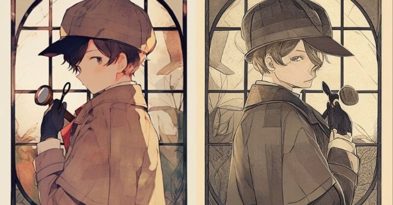

つまり、真相はこうだ。
そう言うと僕の相棒、|夏永才奨《なつながさすけ》は目の前にいる事件関係者に語り出した。その流暢さは、僕たちが事務所を構える横浜での事件を思わせるような、実に堂々たる話しぶりだ。
ちなみに、ここは横浜ではない。実に八千五百キロも離れた遠い地だ。同じ地球上とはいえ、言葉も文化も違うこの場所でこうも自信気に話せるコイツに、僕は長年ともにいるにもかかわらず、憧憬と尊敬が混在した感情を抱かずにはいられない。
◆
十月初旬。立て込んでいた事件が粗方片付いた相棒と僕の探偵事務所『ホークスアイ』は絶賛臨時休業中だった。
もちろん、その間もそれぞれの本業は通常営業。アイツがデザインやらイラストやらの別畑で奮闘しているであろう間、本名の|冬野央智《とうのひさとも》名義で活動している無名ライターの身の上は、諸君が想像するに難くないほどの雑多で繁忙な日々の連続であった。
そして、そんな日々の折、僕はある身近な人物から小さな依頼を受ける。本来であれば、その内容は探偵という職業柄公にはできないのだが、ほどなく諸君にもわかるだろう。今日はそんなささやかなひと場面を懐かしみながら、この事件のあらましをつらつらと書き連ねていこうと思う。
「なんでお前がいるんだよ」
羽田空港に僕の顔が見えると、相棒はあからさまに嫌な顔をした。恋人との逢瀬だからか、普段よりもお洒落に気を遣った雰囲気が恥ずかしくなるくらいに伝わってくる。栗色の髪は綺麗にセットされ、いつもは派手な服装も落ち着いたモノトーンの装いだ。
「里香は？」
「どうやら風邪引いちゃったみたいでさ。だから、二人で行っておいでって」
そう言って、僕はジャケットの内ポケットに忍ばせていたペアの航空券を見せる。薄くかかったサングラスを少し下げ、それが本物であることを確認すると、相棒はサッとその一枚を掬い上げた。
「ウソをつくな。お前は俺の束の間の休息まで奪う気か？」
「ウソだと思いたいのはこっちの方だよ。別にお前がどう思おうが勝手だけど、ほら里香ちゃん、僕らの事務所の経理関係やってもらっているだろ？ 里香ちゃんはお前の彼女であるとともに、大切な事務員でもあるの。つまりはそういうことも考えて、僕はここにいるってわけ」
そう、冒頭に述べた「ある身近な人物からの小さな依頼」とはこのことだ。
つい二日前、野望用で一人事務所にいると、突然彼女がその扉を開けた。
「あ！ 冬野くん、今日くるって言ってたっけ？」
「ああ、おつかれ。里香ちゃんこそどうしたの？ こっちは前の事件で気になることがあったから、ここにあるファイルでちょっと確認していたんだ。まあそれも僕の思い過ごしだったんだけど」
そう言って、手に持っているファイルを小さく揺らす。僕は事件が解決しても、その後思い出したように小さな疑問が渦巻いてしまう性格なのだ。だから、こうして人知れず過去の事件に関する資料を読み返したりするのだが、結局今回も無駄な時間を過ごしてしまったようだ。
「またか～事件は終わったんだよ？ ま、冬野くんらしいっちゃらしいけど」
そうして彼女は持っていた薄茶のトートバッグを才奨の椅子に置く。それを見て、
「今日は才奨、本業のはずだからデザイン会社にいると思うけど。何の用？」
と聞くと、彼女はいたずらな笑みを浮かべている。
「な、何？ 里香ちゃんがそういう顔している時が一番怖いんだけど」
「冬野くん今日休みって聞いてたから、もしかしたらここにいると思ってきたんだ。実は頼みたいことあってね」
そう返され、僕は自然と両手を上げた。もちろん降参のポーズだ。
「はいはい。何でしょう？」
「ちょっと何、その態度は！？」
「だって、もしその頼みごとを断ろうとしても、僕が首を縦に振るまで里香ちゃんは引き下がらないだろ？ まったく、そういうところは才奨そっくりで困るよ」
思わず本音を吐いてしまうと、里香ちゃんは突然後ろを振り返り、背中を見せた。あっ、もしかして怒らせちゃった？ まずいな、さすがに謝っておくか。才奨に密告されると後々面倒そうだしな。
「……ごめん、言い過ぎた。撤回するよ」
すると、彼女はくるっと僕に顔を向けて、満面の笑みで二枚の航空券を渡してきた。そこにはご丁寧に才奨と僕の名前がそれぞれに記載されている。いくらなんでも、準備よすぎない？
「わかってるね、冬野くん。じゃこれ！ 明後日の十時に羽田！ 本当は私たちで行くつもりだったんだけど、用事できちゃってさ。もったいないから行ってきて！ 用事って言うとアイツうるさいから、風邪ってことにしといた方が無難だよ？」
……謝るんじゃなかった。これで里香ちゃんとの交渉成績は通算〇勝一二敗。多分、今後僕が彼女に勝利をもぎ取れる日は一生訪れないだろう。
そう思っているうちに、彼女は矢継ぎ早に僕が断れないようにするための外堀をすべて埋め、そして最後にこう付け足したのだった。
「うちの才奨をよろしく！」
一通り回想していたら、目の前にいる相棒は黙りこんでいる。いつも事件で正論ばかり吐いているせいか、誰かに正しいことを言われるとひとつも反論してこないのが、コイツの素直でいいところでもあるのだが。
「きも」
「おい。語彙力どうした？」
そうして露骨に肩を落としタメ息をついたかと思うと、すでに気持ちを切り替えたのか僕が引きずっているものよりもだいぶコンパクトなキャリーバッグを連れて、搭乗口へと歩き始めた。相変わらず、相棒の荷物は少なく、僕の荷物は多すぎる。これから同じ場所、同じ日数の旅に出るとは思えないほどの差。これは昔から変わらない光景のひとつだ。
◆
ある国を目指して飛行機に乗り込んだ機内。もちろん、特段面白いことなどなかったから、ここらで僕たちが探偵事務所を設立した経緯でも語りたい。
かつての僕たちにはある人物、師と慕う人がいた。そう、僕たちはその人のおかげで出会うことができたんだ。
その人物というのは、かつての探偵であり、今は引退して隠遁生活を送っている|鷹見真秀《たかみまさひで》。
「|芳《こうば》しい事件の香りが充満しているな」
そんな古めかしくも感じる口癖があった彼の事務所は、かつて三軒茶屋の閑静な住宅地にひっそりと佇んでいた。その前を通るたび、僕はいつも鷹見先生の背中に憧れを抱いたものだ。
なぜか昔から警察嫌いな鷹見真秀がいるその空間は、まるで迷宮に足を踏み入れたかのような雰囲気を纏っていた。そして、事務所の扉を開けた先に広がるのは、事件の匂いがそこら中に漂う、異世界のような別世界だった。
そんな彼が探偵業を引退したのは、ある事件がきっかけだ。そのせいで、彼は自らの手で真実を突き止めることを放棄し、静かな生活を選ぶこととなった。
それがどんな事件だったのか、僕たちは今も詳しく知らない。でも、その事件が鷹見先生に深い傷を残したことだけは、よくわかっている。
鷹見事務所に足を踏み入れた当時はまだ学生を卒業したばかりのルポライターで、事件に関わることなど考えてもいなかった。そんな頃に、鷹見事務所にある依頼が持ち込まれたのが、偶然僕が取材をしていたとある事件だった。
その事件を通じて、鷹見先生が僕に声をかけてくれたのだ。最初は単なる好奇心で彼の助手として手伝うことになったが、その後すぐに彼の手法と捜査方法に強く惹かれるようになる。
夏永才奨とは、その時に出会った。最初はただの同僚だったが、次第に事件を一緒に解決する中で、お互いに信頼を築いていった。
「鷹見さんの決め台詞さ」
それはある事件で、才奨と夜通し張り込みをしなくちゃいけない時。犯人が出てくると思われる建物の近くに僕たちは車を停めた。そしてその車の中にいる時、才奨がそんな風に口を開いた。
「正直ダサくね？」
そう言って、助手席に座る才奨はこっちを見ている。横目で視線を感じながらも、僕は運転席で蒸しパンを頬張りながら前方を注視。犯人がいつ現れてもいいように、目線を外すわけにはいかないからだ。
「僕は鷹見先生を心から尊敬している」
硬い表情で返答すると、「つまんないやつ」と才奨が前に視線を戻して呟いている。
「でも」
そして、気づいたら才奨の方を見ていた。どうやら僕にとっても、それはいつかしてみたかった話題だったのだろう。
「『芳しい香り』はないよな。パンじゃないんだから」
そうして笑い合ってからというもの、僕たちの距離は急速に縮まり始めた。事件解決も大事だけど、こうした些細な共感も僕たちにとっては同じくらい大切なものだ。
そんな才奨も当初は、僕と同じく先生の助手に過ぎなかったが、彼の直感と推理力にはすぐに驚かされた。鷹見先生ですら気づかないところをすでに見抜いていたからだ。あの時、先生が才奨に「お前も探偵になれ」と言ったのが、今思うと『ホークスアイ』設立のきっかけのひとつだったのかもしれない。
「お前たちには、それぞれ異なる能力が備わっている」
ある時、鷹見先生はそう言った。あれは確か、大きな事件の山を越え、少し暇ができた頃。早めに仕事が終わり、事務所で三人で飲んでいた夜だった。
「才奨はその話しぶりで否応なしに人を惹きつける。単に口が上手いということじゃない。相手に説得力をもって訴えるんだよ。もしアイツがうちの探偵になってくれたら犯人を追い詰めたり、特に対人調査なんかには重宝するだろうな。それに格闘技も多少嗜んでいる。まだ若造のくせに、探偵の適正は怖いくらいにある」
すると才奨は「さすが、わかってるね」と調子づいている。「その自己肯定感の高さはいつ見ても爽快だな」と先生は冗談を言った時のように笑って、そして今度は僕を見た。
「央智。お前には読み解く力がある。話すのは下手かもしれないが、例えば事件現場にある証拠だったり、マル害が何を思って最期を迎えたのか、といったものを的確にキャッチしてくれる。過去や遺されたものを解釈する力。その嗅覚を持っていることは今後も誇りに思っていい」
僕はその嬉しすぎる言葉に小さく「ありがとうございます」としか返せなかった。「お前はもう少し自信を持て」と先生に励まされる。
あの時はお酒も入っていたから、先生も僕たちを不用意に褒めたくなったのかもしれない。でも、あの言葉たちは今なお僕たちの心に残っている。時々、才奨ともその思い出話に花を咲かせるくらいなのだから。
そんな言葉をかけてくれた先生が引退して数か月が経った頃。行き場を失った僕と才奨は共同で探偵事務所を開いた。
相棒が長らく暮らす横浜の街に小さな事務所を構え、いくつかの案件をこなすうちに、少しずつ名前が知られるようになった。
探偵事務所・ホークスアイ。鷹見先生の目にはどう事件が映っていたのか。そして、その目に映るものを僕たちも見てみたい。そんな願いが込められた屋号だ。
だが、それでも鷹見事務所ほどの威厳や実績を持てたわけではない。だからこそ、今も先生に対して、尊敬と恐れを抱いている。もし彼が探偵として戻ってきたら、僕たちはどれほど嬉しいのだろう。でも、彼はきっとこの世界に戻ることはない――それが、僕たちの知る限りの真実だった。
◆
思い思いの時間を飛行機で過ごし、およそ十三時間のフライトが終わると、僕たちはイスタンブール空港へと降り立った。
東洋と西洋の交差点。そうも呼ばれるトルコの街並みは、内心ワクワクしていた僕の鼓動をさらに早めた。様々なモスクが軒を連ねるイスラム圏ならではの風景。その中を歩くだけで、僕たちは一瞬にして非日常へと誘われていく。
「いつ見ても感嘆する街並みだな」
「感嘆したなら、今回こそちゃんと観光するぞ。お前と旅行に行っても、大概事件に巻き込まれて楽しめたことがないからね」
そうこぼすと、才奨は「目の前に事件があれば首を突っ込むのが探偵だろ」と言っている。言っていることは決して間違っていないのだが、そもそもコイツは観光が苦手なのだ。“海外”という日常とかけ離れた場所にいても、事件を前にした時の方が明らかに活きがいい。もうこれはきっと、コイツの性分なのだろう。
「ともかく。今日は宿泊するホテルから近い観光地を片っ端から巡る！ あらかじめ目星はつけておいた。最近はご無沙汰だったけど、ようやく僕のミラーレスカメラが火を噴ける」
「俺のスマートフォン撮影の方が絶対にうまい。写真は画角と構図で決まる。まあ、デザイナーでもある俺の方が長けていて当然だがな」
ぶっきらぼうにそう言う相棒。嫌味だが首肯せざるを得ない指摘に黙っていると、ふと“keep out”の規制線が目に入った。
「もちろん認めてるさ。ところで昼飯がまだだったな。あっちにこの辺りで有名なケバブレストランがあるからそこに……」
と言いかけたところで、相棒は嫌な予感通り、まるでそれに吸い寄せられるかのような足取りで規制線の方向へ直行している。おいおいおい。まさかトルコでも事件を追うつもりか？ 勘弁してくれよ。思う存分観光したかったのに！
規制テープを何の躊躇もなく潜り抜けて、相棒は何食わぬ顔で中に入る。
が、早速警官に止められた。そりゃそうだろ。てかお前、いくらトルコ語が喋れるからとはいえ大した勇気だな。僕もこの国の言語はイケる口だけど、そこまでの勇気は一生持てる気がしない。
そんなことを考えていたら、背後から声をかけられた。
「おや、冬野くんじゃないか。奇遇だね」
聞いたことのある声に振り返ると、そこには梶原氏がにこやかな顔で微笑んでいる。
いつもは堅苦しいコートを着て、いつの時代の刑事だよと思わせるような様相だが、今日はラフなジャケットにジーンズという、普段とは比べものにならないほどカジュアルな装い。その姿があまりにも新鮮なので、実のところ一瞬誰かわからなかったほどだ。
「なんであなたが？」
「束の間の休息さ。いいだろ？ ワシだって旅行くらいしても」
「……もちろんですよ」
警察の人間らしくない、茶目っ気のある声が自然と心のガードを下げさせる。梶原氏にはほかにもっと向いている職業があるのではないかと、気づけば余計なことを頭の片隅で考えている。
「実は今、才奨もきてまして。ほら」
そう言って相棒のいる方向を指差すと、梶原氏は「こりゃ相変わらずだ」とぼやき、頭を掻いた。
「ったく。しょうがない。冬野くんも一緒にきたまえ」
梶原氏の取り計らいにより、僕たちは事件現場を少し見させてもらえることになった。いや、僕にとってはありがたくもなんでもなかったのだが、相棒は「梶原さんさすが！ まさに将来有望な警察庁のホープ！」と調子よくおだてている。
白髪の混じった梶原氏の「ワシ、あと三年で定年だけど」という悲壮感溢れる返しを、相棒が聞いている様子はない。
◆
「これはきっと、現代の魔女裁判だよ」と、僕は事件現場を一通り見て言った。
目の前には焼け落ちた小さな家の残骸が広がっている。その周囲には規制線が張られ、警察官たちが忙しく動き回っていた。空は曇り、少し肌寒い風が僕たちの頬に吹きつける。
「魔女裁判？」と、思わずといった様子で才奨は口を挟んだ。
「そのセリフ、おかしくないか？」
「おかしくなんてない。あの家、何者かが放火したのは間違いないんだろ？ そして、その放火が意図的に罪人を追い詰めるために行われたものだとしたら」
「ちょっと待て。『魔女裁判』ってどういう意味だよ？ 罪人を追い詰めるためとはいえ放火だなんて、どんな犯人だってやりたくないはずだ」
そのやり取りを聞いていた梶原氏が苦笑いしながら僕たちに近づいてきた。どうやら現地警察との連携が取れたらしい。今後は梶原氏も捜査に協力する。そして、それは自ずと僕たちも本事件の捜査に参加することを意味していた。
「確かに、この事件は少し奇妙だ。でも、これが『魔女裁判』って言うのなら、あれだな。何者かの大きな勢力が巧妙に罠を張って目障りな存在を消し去ろうとしているってことだ」
才奨はその言葉にハッとする。「つまり、何か大きな陰謀が隠れているってことですか？」
「そういうことやな。現代の魔女裁判よろしく、過去の出来事が一連の原因を作り、その犯人がターゲットとして、あえてこの街の人々を魔女に仕立て上げているんだ」
普段なら突飛とも思える僕や才奨の推理に反対することの多い梶原氏だが、今回ばかりはすぐに賛同した。もちろん推理が命中したという自負もあるが、恐らくそれだけじゃない。
いつもより協力的なその姿勢から、僕はようやくあることに気づいた。僕たちはきっと、彼に騙されたんだ。現地における警察との連携の早さといい、恐らく彼はトルコ警察から応援要請されてこの国にやってきたのだろう。なんせ彼は、日本でも一握りしか存在しない、国際警察としての一面も持ち合わせているのだから。
「放火された住人が無実の罪を着せられているとして、それは一体何なんだ？」
「背景にあるのは、かなり根深い問題だと思う」僕は苦い顔をする。
「この地域には、かつて住んでいたクルド人が迫害を受けていた歴史があるんだ。この住人もかつてクルド人迫害に秘密裡に関わっていた政治家の息子家族だってことが明らかになっているようだし」
「親がしたこととはいえ、その息子は罪に関わっていないもんな」
「誰かが復讐のために、クルド人を迫害した者の息子がいることを嗅ぎつけて犯行に及んだ。今なお続く民族問題を扇動する犯行ともいえる」
梶原氏は僕たちのやり取りに頷きながら言った。
「かつての遺恨を晴らそうとしている者がいる。そして、その犯人の思惑が今、少しずつ実行に移されているのかもしれない」
◆
それを聞いた才奨はすでに次の一手を考えているようで、じっと現場を観察していた。
「どうしても気になるのは、放火された家の住人がどこへ行ったかだな。遺体もないし死んでいないと仮定すると、彼の行方を確かめる必要がある」
「それ、ワシも思った」
梶原氏が頭を掻きながら言う。氏とは幾度となく捜査をともにしてきたが、そのたび思う。いくら捜査依頼をした探偵とはいえ、こんな若者に次々とその主導権を握られるのは決して気分はよくないだろうと。でも、梶原氏は僕たちとまったく同じ立場で、国際警察という肩書きなんて忘れるくらいのフラットさで、ともに捜査をしてくれる。だから、刑事の中でも彼のことだけは厚く信頼しているのだ。
「家主以外の家族が、どうやら少し前にこの地域を離れたようだ。でも、引っ越し先がわからないままになっているんだよ」梶原氏が追加で情報を提供する。
「それは気になるな」才奨が身を乗り出して言った。
「引っ越し先が不明ってことは、誰かが彼らを追っている可能性が高い。あるいは、彼ら自身が何かから逃げるようにして、足を早めたのかもしれない」
「でも、なぜ？」僕は首をかしげた。「彼らが何かを知っている、もしくは知っていたってことか？」
「十分にある」才奨は満足そうに頷く。
「もしその家族が知っている情報が誰かにとっての不利益となり得たら。その秘密は恐らく重要なものだ」
その時、梶原氏が急に思い出したように顔を上げた。
「確か、彼ら家族が頻繁に関わっていたのは、クルド人のコミュニティだったと言っていたな。そのコミュニティが、かつて何か大きな抗議活動を行っていたと聞いたことがある。もしかすると、その時の情報が関係しているんじゃないか？」
「抗議活動？」僕は目を見開いた。
梶原氏は頷く。「詳細はまだ判明していないが。調べる価値はあるかもしれない」
「とりあえず、住人の行方を追ってみますよ」才奨は即答した。
「その家族がどこに行ったか、そしてもし彼らが何か重要な情報を持っているのなら、それを引き出さなければならないので」
僕は少し考えた後、頷いた。「でも、どうやって？ 警察でもまだわからない情報だし、普通に追っても時間はかかるだろうし」
「それが問題なんだよな」
才奨が指を鳴らしながら言った。僕の相棒は何か行き詰った際、こうして指を鳴らす癖がある。昔その理由を聞いたことがあったが、確か「音で行き詰った空気を変えるんだよ。それさえできれば何でもいいんだ」と言っていたな。
「そうだ。梶原さん、ちょっと手を貸してくれないですか？」
つい余計なことを思い出していたら、才奨はそう梶原氏に話していた。
「何か頼まれるのか？」梶原氏は興味深そうに目を細める。
「実は、この国には昔からのツテがあるんですよ。特に、この地域では知っている人が何人かいる」才奨はニヤリと笑った。
「彼らなら、行方を突き止める手助けをしてくれるかもしれない」
梶原氏は少し躊躇した様子を見せたが、やがて頷いた。
「わかった。じゃあ、ワシが警察を通じて調査しつつ、そっちも動けるようにしてみるよ」
才奨は笑顔で「助かります！」と答え「さすが警察庁の……」と言いかけたところで言葉を続けるのをやめた。ようやく大人になったか、と思いながら僕たちは現場を離れる。
◆
その夜、僕たちは再び集まり、情報を交換することにした。
僕がチェックイン予定のホテルに向かい二人分の荷物を置いている間、才奨はすでにいくつかの知り合いと接触して、とある事実を掴んでいた。
ホテルの地下にあるバー。照明の暗い店内のカウンターで一人飲んでいた相棒の隣に座ると、おもむろにマルボロを取り出した。僕も同じようにセブンスターに火をつける。
「やっぱり、あの家族、ある人間に追われていたみたいだ」
才奨は煙を上昇させながら呟く。目の前にはトルコで最もポピュラーな酒、ラクが置かれている。マスターに同じものを、と頼むと、僕の前にもラクが差し出された。この酒はブドウからできており、その口当たりは甘くてコクもあるのだが、アルコール体質でないこの僕である。度数四十度以上の蒸留酒であることを一口目で思い出し、そっとグラスを戻した。
「でも、その『追っていた』人物が誰なのか、今のところ明確な証拠は出てこない。が、面白いことに、その人物はクルド人の権利を求める団体に所属していたんだ」
そう言って、相棒は僕に一枚の写真を見せてきた。それはどうやら団体員の集合写真のようで、中東系の顔が二十人ほど並んでいる。
「クルド人の権利を？」僕は眉をひそめた。
「そう。どうやら、その団体の中に過去の迫害を復讐することを目的とした、過激な思想を持つ者がいるらしい。それが、今回の犯行に繋がった可能性がある」才奨が続けた。
「それは重要な手がかりになるな」
鷹見先生が言う通り、僕は残されたものを読み解きながら過去を掘り下げるのが得意な一方、相棒はその言葉で情報を集め未来をこじ開けていくのが専門分野。それぞれ、推理という武器を携えているのに、進む方向は真逆。だからこそ、僕たちはいわば自身の弱点を補完し合うように事件を追うのだ。
「だが、ただの復讐者じゃない。もっと大きな力が働いている。この復讐劇は、誰かが背後で操っているに違いない」
その言葉が示す通り、この事件は簡単な犯罪ではないだろう。背後には、かつてのクルド人迫害の痛みを引きずった者たちが、今再び立ち上がろうとしているのだ。それが何を意味するのか――その答えを出すには、まだ多くのピースを埋めていかなければならない。
イスタンブールの街も深い夜に差し掛かった頃、バーで一通り酔った僕たちはホテルの一室で才奨が手にした地図を広げながら、何かを考えている。
「どうした？」
僕は尋ねた。才奨が黙って地図を見つめているその姿は、どこかいつもと違う雰囲気を漂わせていた。何かに気づいたのだろうか。
「ここだ」才奨は指で地図上のある場所を指し示した。
「あの家族が逃げた先の可能性として、この辺りを調べてみたいんだ」
「この辺りって……どこ？」僕は地図を覗き込む。
「イスタンブールの西、旧市街のすぐ外れ。アスラリ・オデュ地区だ。さっき現地の知り合いに聞いたら、ここは昔からクルド人の移民が多くて、過去の傷を持った人たちが集まっている場所だと言っていた」そう説明を続ける。
「もしあの家族が追われているなら、この地域に隠れていることも考えられる」
僕は少し考え込みながら答えた。「あえて相手のテリトリーに飛び込んで、敵の目を欺いているということか」
「すでに目ぼしい地域は警察がしらみつぶしに調べている。この地域なら、ハナから嗅ぎ回られることはないと思っていてもおかしくない」
いかにも才奨らしい。傍から見れば奇妙な捜査手法に思えるだろうが、僕には確信があった。可能性の低いところから調べる。つまりは犯人も裏をかいてくる。これは実践ですでに経験してきたことなのだ。
「それに、このエリアなら、地図を見る限りどこも狭い路地だし、簡単に見つかりそうな気配だな。でも、それは追っ手にとっても同じことがいえてしまうが」
才奨はすぐにその点を指摘し、「だからこそ、俺たちが先に動かないと」と続けた。
「あの家族が隠れた場所を突き止めるためには、まずはその追っ手がどんな人物かを知る必要がある」
「でも、どうやって探すんだ？ 現地の人間でも、そんな情報を簡単に手に入れるのは難しいだろ？」
そう言うと、才奨はにっこりと笑って肩をすくめた。
「だから、情報収集に長けた人間が必要なんだよ」
「誰か心当たりでも？」
「前に言っていただろ？ 観光ついでに、あの『知り合い』を訪ねてみようって」才奨が意図的に曖昧に言った。
「あぁ、あの人か……」僕は顔をしかめる。「でも、アイツに頼むのはちょっとなぁ」
「そんなこと言っているうちは進展なんてしないぜ」才奨は笑った。